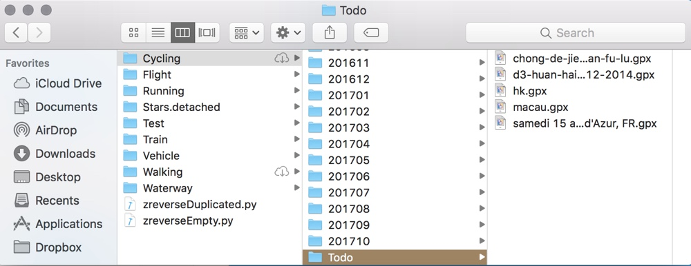

To record an activity, select the mode of your activity and then tap the red record button.
When you move around, you will see a bold line covering your path. You need to move at least 10 meters to pin a new point.
From the left edge of screen, you can slide out a sidebar, as the following screenshot shows. By turning on and off these modes, you can filter different types of activities.
Searching a city or street can be done in the upper side searchbox.
Tap the globe icon to enter the map setting interface. The setting itself should be self explaining. As a reminder, the flyover mode only works in Satellite and Hybrid modes for certain cities, listed in this page.
Go to the app setting by tapping the Setting button in the bottom right corner. These settings are less prone to changes. Changing colors of different mode of traces can be done here. If you reside in China and notice a shifting of traces, try turning on the Map Shift switch.
Depending on your platform, it might be slightly different. But the idea is to copy GPX files to Traces app's iCloud Drive folder.
Take using iCloud.com as example. Under the iCloud Drive icon, you'll find a folder named Traces, inside which looks like the following screenshot. Traces follows a strict file detection rule. Files uploaded to the wrong place will result in no effects. GPX files should be put in the folders following this pattern:
iCloud Drive/Traces/[activiy mode]/[any folder]
For example, Alice planned a bike route in Strava, exported as GPX file, and wants to show it in Traces. What she needs to do is to put that GPX file to the following iCloud Drive path:
iCloud Drive/Traces/Cycling/Todo

Traces 4 introduced the online traces feature, built upon Apple's CloudKit. The synchronization between iCloud Drive and CloudKit is kind of tricky. You might encounter some weird sync issues. But most of the time, it should be fine.
To visit your online trace map, sign in with your Apple account at https://cloud.traces.website/account, then head to https://cloud.traces.website/ for your map.
The online trace map is a constant beta. New features will be rolled out frequently without notice. The service is currently free of charge but may be subject to charges due to website hosting fee and Google map cost.
For those who are curious about online trace map, it looks like this.
Lastly, if you have problems, please drop me an email. I speak Chinese and English. I appreciate your support!